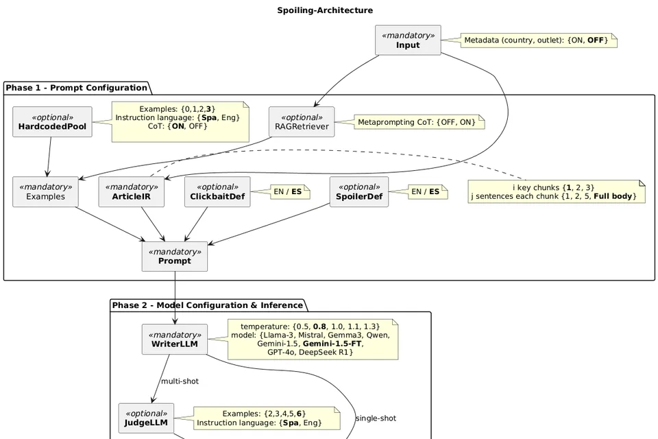
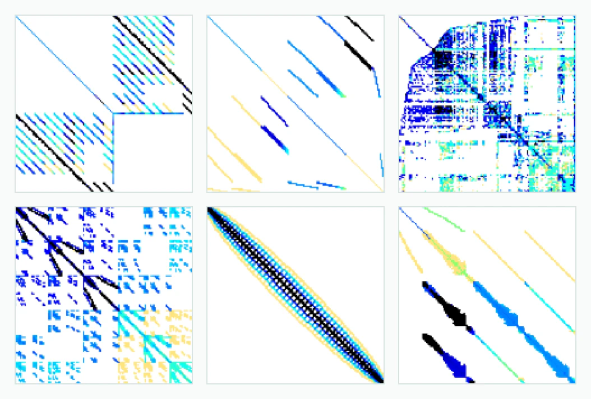
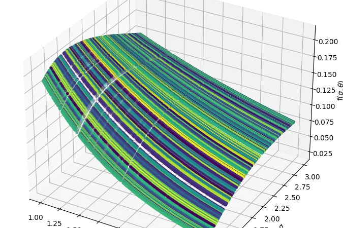
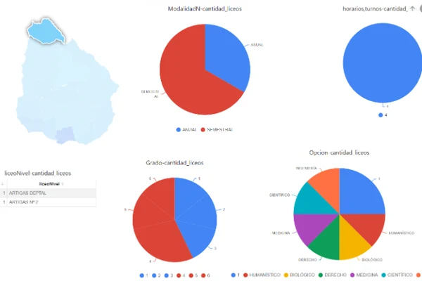
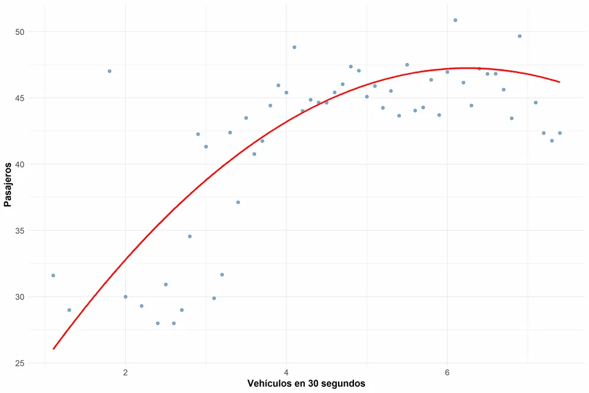
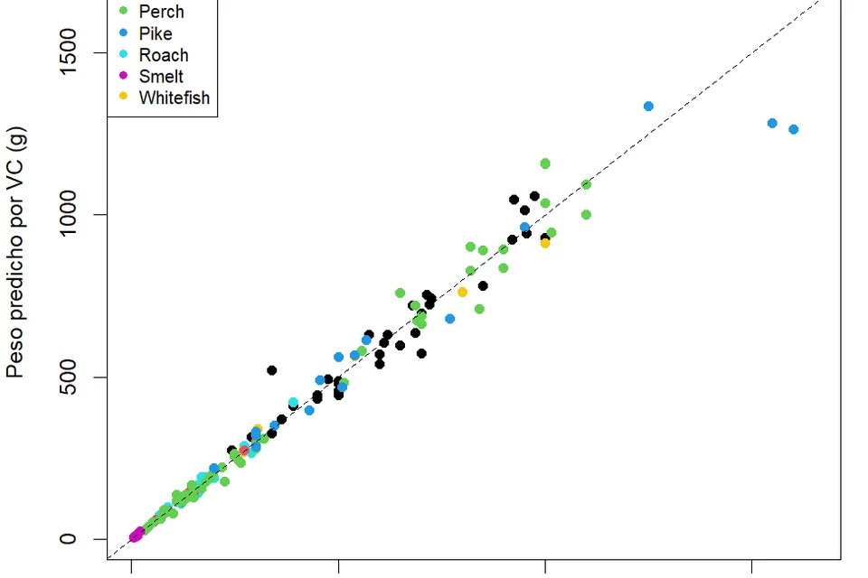
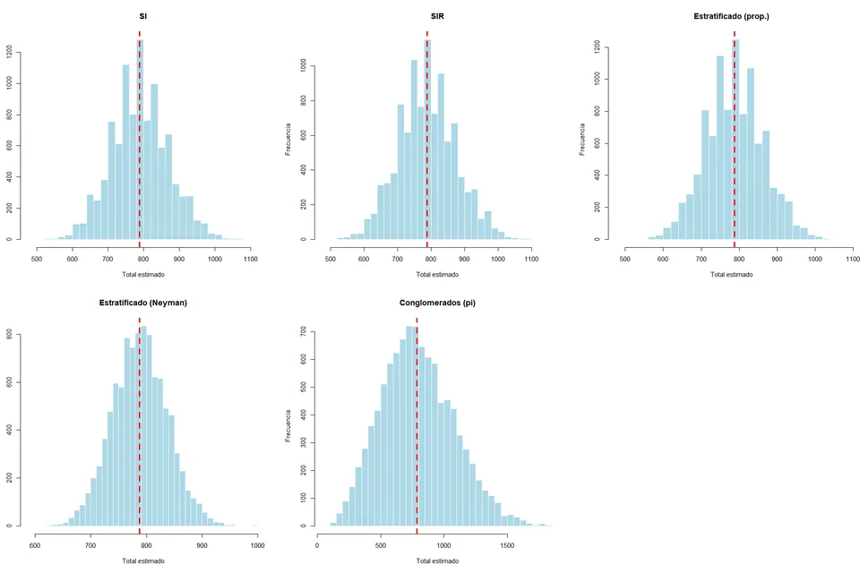
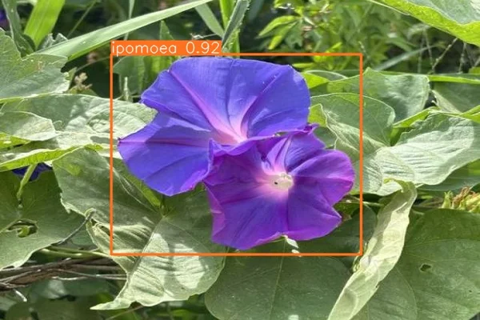

Education
Computer Science
M.Sc. in Computer Science | PEDECIBA | 2026 - | Thesis
Thesis on natural language processing and AI agent-based systems.
Computer Engineering | FING - UDELAR | 2020 - 2025 | Final project (2024)
Statistics
B.Sc. in Statistics | FCEA - UDELAR | 2025 -
Remaining:
- Inference II WIP
- Supervised Statistical Learning WIP
- Differential Equations
- Time Series
- Multivariate Analysis
Economics
B.Sc. in Economics | FCEA - UDELAR | 2025 -
Currently taking
- Supervised Statistical Learning B.Sc. in Statistics
- Inference II B.Sc. in Statistics
- Microeconomics I B.Sc. in Economics
- Introduction to Macroeconomics B.Sc. in Economics
Professional experience
IT Analyst at the Ministry of Social Development
Requirements gathering, and development and maintenance of systems with Java, Python, React, PostgreSQL and SQL Server, in coordination with external providers. Implementation of Machine Learning solutions.
Intern at the Intendencia de Montevideo
Requirements gathering, and development, deployment and maintenance of applications with JEE, EJB and JBoss on Oracle, PostgreSQL and SQL Server, plus Grafana dashboards, in multidisciplinary teams using agile methodologies.
Research and academic work

TA1C 2025 - Spanish clickbait detection and spoiler generation
Models to detect clickbait in Spanish and agents to generate spoilers were developed and evaluated, along with information retrieval pipelines, fine-tuning strategies and few-shot learning methods. The work placed fourth in the detection track and first in the spoiler generation track.

Kernel selection for sparse matrix-vector multiplication
Machine learning methods to select optimal SpMV kernels on GPU were developed and tested. Image-derived features were designed, dimensionality reduction was applied and several classifiers were compared to predict the fastest implementation.

Computational intelligence for surrogate model generation
Surrogate modeling was studied through genetic programming focused on symbolic regression. DSO, Operon and DSR were evaluated, and DSO was extended to multi-objective optimization with constraints and monotonicity handling. The trade-offs between performance and generalization were analyzed.
Course projects

Information systems for big data: data integration and visualization system for the Uruguayan educational offering, with ETL processes, OLAP analysis and interactive dashboards.

Descriptive statistics: descriptive statistical analysis and data visualization, with dispersion analysis, regression models and geospatial mapping in reproducible workflows.

Linear models: multiple linear regression with collinearity, heteroskedasticity and normality diagnostics; log-log transformation, backward AIC variable selection and 10-fold cross-validation.

Survey sampling and design: the empirical distribution of total estimators was simulated with 10,000 replications on 2023 Uruguayan Census data, under simple random, with-replacement, stratified and cluster designs; design effects, ratio estimators and empirical versus normal confidence intervals were compared.

Cyber-physical systems workshop: computer vision system for object detection, with data augmentation, GAN-based data generation and few-shot learning strategies.
Skills
Programming languages
- Java
- Python
- JavaScript
- TypeScript
- Kotlin
- C
- C++
- SQL (PL/SQL)
- R
Back-end and APIs
- Java EE / Jakarta EE
- JAX-RS
- JPA
- EJB
- FastAPI
- Django REST Framework
- Flask
- Celery
- REST API design
- JBoss / WildFly
Front-end and mobile
- React
- Angular
- HTML
- SCSS
- Android (Java / Kotlin)
- Android Studio
Data and databases
- PostgreSQL
- Oracle
- Microsoft SQL Server
- Redis
- Pandas
- NumPy
- JSON NoSQL models
ETL, business intelligence and visualization
- Pentaho Data Integration (Kettle)
- Report Designer
- Mondrian OLAP
- Saiku
- Power BI
- Grafana
Cloud and DevOps
- Microsoft Azure
- Google Cloud
- AWS
- Docker
- Podman
- Nginx
Machine learning: tools
- PyTorch
- TensorFlow
- Keras
- scikit-learn
- spaCy
- Ultralytics (YOLO)
- Roboflow
- Hugging Face
- LLaMA / Ollama
- Kaggle
Machine learning: methods and models
- Convolutional networks (CNN)
- YOLO
- GAN (DCGAN, StyleGAN)
- RNN / LSTM
- Transformers (BERT, GPT, LLaMA)
- RAG
- Linear and logistic regression
- Decision trees
- Random forests
- k-NN
- SVM
- k-means
- PCA
- t-SNE
- HOG
- Haar-like features
- SIFT
No matching skills.